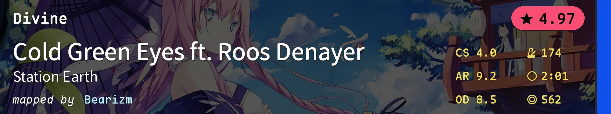
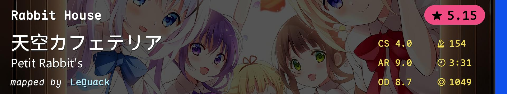
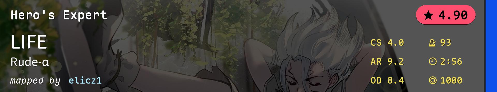
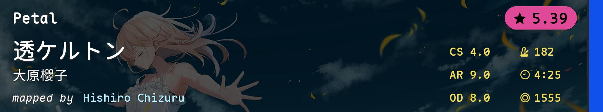
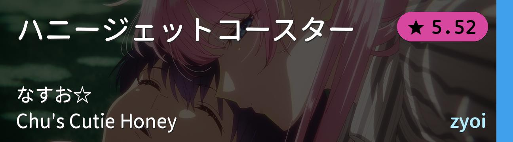
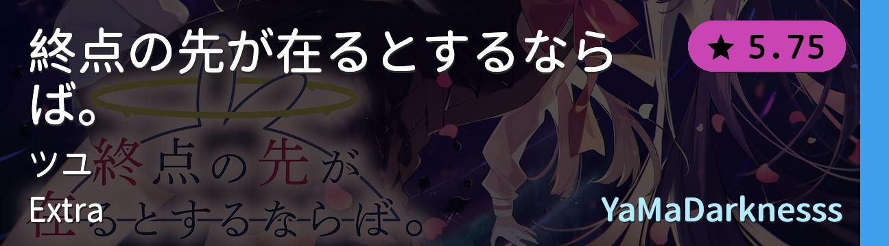
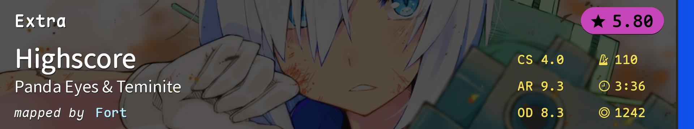
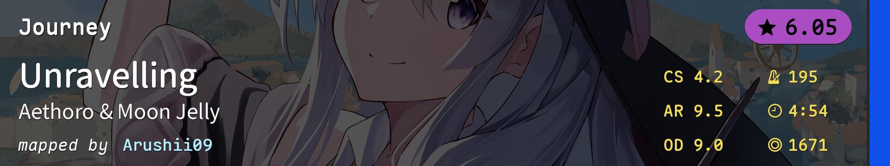
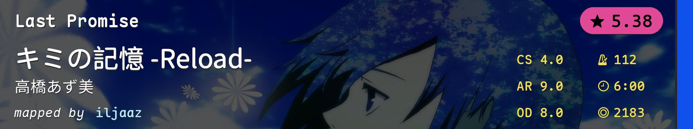

| # | BID | Beatmap Info | Mods | BPM | Hit Length | Max Combo | CS | AR | OD | Notes |
|---|---|---|---|---|---|---|---|---|---|---|
| 1 | 814293 |  | NM | 174.0 | 2:01 | 562 | 4.0 | 9.2 | 8.5 | PP跳 简单难度1级 |
| 2 | 2737694 |  | NM | 154.0 | 3:31 | 1049 | 4.0 | 9.0 | 8.7 | 常规跳 简单难度2级 |
| 3 | 3230041 |  | NM | 93.0 | 2:56 | 1000 | 4.0 | 9.2 | 8.4 | awkward aim 简单难度3级 |
| 4 | 3093633 |  | NM | 182.0 | 4:25 | 1555 | 4.0 | 9.0 | 8.0 | 综合 普通难度1级 |
| 5 | 3994109 | NM | 200.0 | 3:36 | 1235 | 3.2 | 9.0 | 8.0 | 大圈aim 普通难度2级 |
|
| 6 | 3743460 |  | NM | 175.0 | 3:25 | 1131 | 4.2 | 9.3 | 9.0 | 综合 普通难度3级 |
| 7 | 4268400 |  | NM | 235.0 | 2:39 | 1058 | 4.0 | 9.2 | 8.0 | 高速跳 普通难度4级 |
| 8 | 736214 |  | NM | 110.0 | 3:36 | 1242 | 4.0 | 9.3 | 8.3 | 高速跳 困难难度1级 |
| 9 | 3779139 |  | NM | 195.0 | 4:54 | 1671 | 4.2 | 9.5 | 9.0 | 大跨度awkward aim 困难难度2级 |
| 10 | 4489979 |  | NM | 112.0 | 6:00 | 2183 | 4.0 | 9.0 | 8.0 | 移动与持续aim 困难难度3级 |